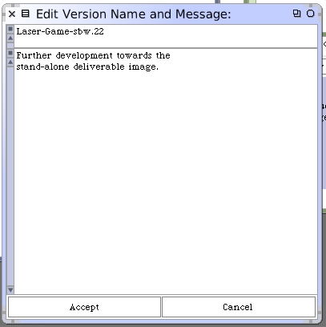

There are a few steps left to perform in this section. Add the following class method to LaserGame.
prepareApplicationWarningMessage
^'Really make a stand-alone image?
Any existing Laser Game morpsh should be closed.
A new one will be re-created by this process.
Important developer tools will be disabled.
The image should be saved a new name as the final step of this process.' translated
We will use this warning message as a reminder to ourselves just before we are about to create the deployment image. Now create the new class method that pulls all of this together.
prepareApplication
"LaserGame prepareApplication"
(self confirm: self prepareApplicationWarningMessage) ifTrue: [
(SelectionMenu confirm: self closeAllOpenWindowsMessage) ifFalse: [^ self].
self closeAllWindows.
self launchFullWorld.
self disableFeatures.
self addApplication.
SmalltalkImage current saveAs.
]
Assuming that all of this code has been entered carefully, save the Monticello LaserGame package as version 22.
